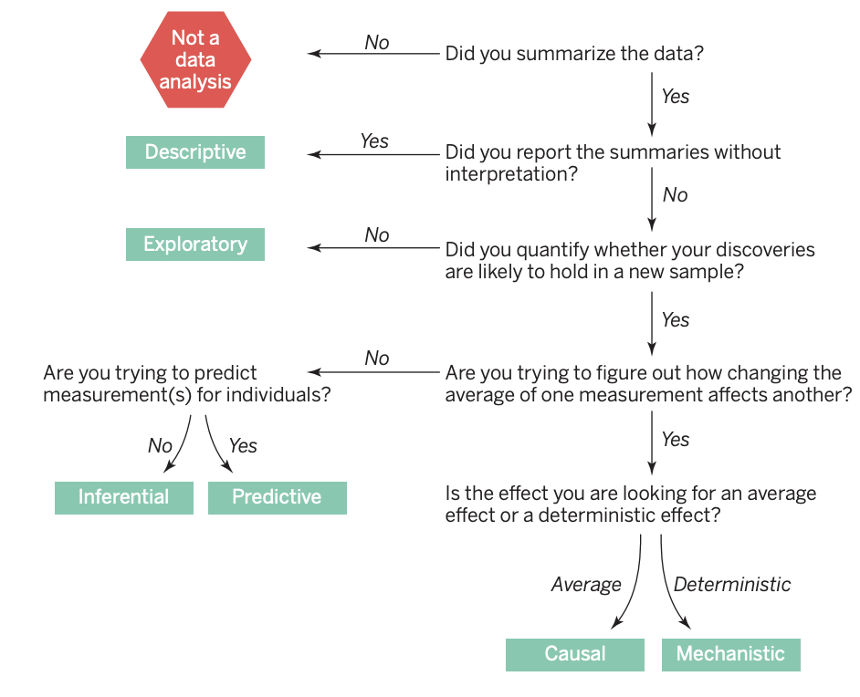

2.1 State the Question
Actuarial Data Science Online Textbook
Learning Objectives for this lecture
- Understand and explain the different types of questions
- Apply the process to do data analysis in a business setting
The 5 steps of the data analysis cycle (DAC)
- Stating and refining the question
- Exploring the data
- Building formal statistical models
- Interpreting the results
- Communicating the results
The epicycle for each step
- Setting Expectations,
- Collecting information (data), comparing the data to your expectations, and if the expectations don’t match,
- Revising your expectations or fixing the data so your data and your expectations match.
Applying the Epicycle to Stating and Refining Your Question (Step 1)
You can now use the information about the types of questions and characteristics of good questions as a guide to refining your question. To accomplish this, you can iterate through the 3 steps of:
Establishing your expectations about the question
Gathering information about your question
Determining if your expectations match the information you gathered, and then refining your question (or expectations) if your expectations did not match the information you gathered
Activity
- Please form into groups and get to know each other.
- Please select one data science problem (based on your own experience) for your group.
- Please follow the epicycle analysis to state and refine your question (Step 1 of the Data Analysis Cycle).
- Please summarise the key points and share them on the Teams channel.
Questions1:
- Descriptive: summarize the measurements in a single data set without further interpretation.
- Example: Australian Census
- Exploratory: builds on a descriptive analysis by searching for discoveries, trends, correlations, or relationships between the measurements to generate ideas or hypotheses.
- Example: the four-star planetary system Tatooine was discovered when amateur astronomers explored public astronomical data from the Kepler telescope.
- Inferential: quantifies whether an observed pattern will likely hold beyond the data set in hand. This is the most common statistical analysis in the formal scientific literature
- Example: a study of whether air pollution correlates with life expectancy at the state level in the United States
Questions (continued):
- Predictive: uses a subset of measurements (the features) to predict another measurement (the outcome) on a single person or unit.
- Example: web sites use polling data to predict how people will vote in an election.
- Causal: asks about whether changing one factor will change another factor, on average, in a population.
- Example: decades of data show a clear causal relationship between smoking and cancer.
- Mechanistic seeks to show that changing one measurement always and exclusively leads to a specific, deterministic behavior in another.
- Example: data analysis has shown how wing design changes air flow over a wing, leading to decreased drag. Outside of engineering, mechanistic data analysis is extremely challenging and rarely achievable.
What is the Question?
“We have found that the most frequent failure in data analysis is mistaking the type of question being considered.”

Example
- Is it causal?
- Example: analyses of the relationship between cellphones and brain cancer (link)
Activity
- Please specify the question type your team has specified in the previous activity
- Plesae share the refined question and the question type by replying to your previous post in the Teams channel.
- Please challenge your questions:
- Why is this an important question? Who cares about this question?
- Has this question been already answered?
- Is this question answerable?
- Is this question too broad? Can we make it more specific?
- What makes a good question?
Characteristics of a Good Question
- The question should be of interest to your audience, the identity of which will depend on the context and environment in which you are working with data
- You should also check that the question has not already been answered.
- The question should also stem from a plausible framework
- The question, should also, of course, be answerable.
- Specificity is also an important characteristic of a good question.
Translating a Question into a Data Problem3
- Every question must be operationalized as a data analysis that leads to a result.
- Think through what the results of the data analysis would look like and how they might be interpreted.
- What sorts of questions don’t lead to interpretable answers?
- A question that uses inappropriate data – make sure that the data available to answer your question provide reasonably specific measures of the factors required to answer your question,
- a factor that you were not necessarily considering in your question is related to both your exposure of interest and your outcome of interest,
- the result is not interpretable because the underlying way in which the data were collected lead to a biased result,
- selection bias, which occurs when the data your are analyzing were collected in such a way to inflate the proportion of people who have both characteristics above what exists in the general population.
Business Environment
- Objectives
- Constraints
- Operating environment
- competitors
- consumers
- management issues
Activity
Assume you are an actuary working for a consulting firm. In your company, there are now two teams (Team A and Team B) working on different projects.
Team A works on forecasting the demand for a grocery retailer. This project needs to estimate the demand so the rest of the supply chain knows the amount of products to send to stores. Once the demand is predicted, the supply chain can work out how much to order, when and where to send it. Over-forecasting leads to waste. Under-forecasting leads to lost sales. Prediction accuracy is the most important consideration for this project.
Team B works on predicting the claims for a motor insurer, specifically for their comprehensive insurance product. This project needs to predict the number of claims and the amount of claims next year so as to set appropriate premiums for prospective policy holders. Over-estimating claims will make their premiums non-competitive and under-estimating claims could lead to losses. The interpretability and ease of implementation of the model is more important than prediction accuracy. However, the model should be reasonably predictive.
- Question: List the Objectives, Operation Environment, and Constratins for each of the cases.
Footnotes
Reference: Leek and Peng (2015)↩︎
Read Chapter 3.4 of The Art of Data Science for more detailed explanation↩︎